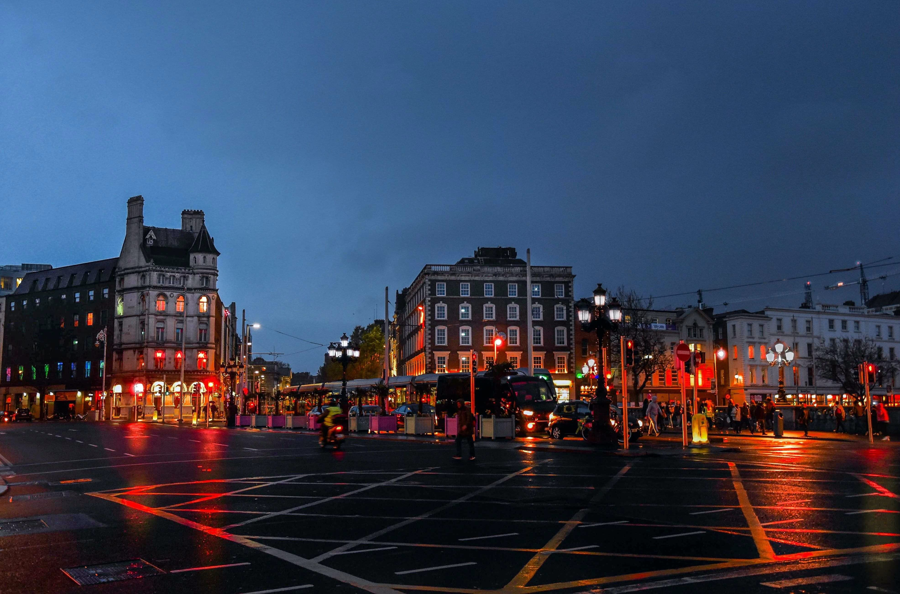

Tragetoria da minha vida
Bem, como todas já sabem estou cada vez mais próximo de realizar um sonho, que seria morar fora do Brasil. Essa aventura já tem data, mais ou menos! (10/10/2022) Então resolvi encarar este desafio e dividir com vocês. Parei e pensei... Imagina que eu fosse casar e poderia pedir uma contribuição/ajuda/presente, para familiares e amigos intimos. Porém no caso seria uma contribuição para meu Intercambio, não me vejo com o dom do matrimonio, sim em ganhar esse mundão e realizar meu sonho e poder ajudar minha familia e mudar totalmente de vida. Sabe o que me deixa mais feliz? Saber que no decorrer da vida estive ao lado de pessoas maravilhosas e que sempre estiveram ao meu lado. Eu passei por muitas dificuldades, tanto financeiras, quanto existencial. Por muito tempo não sabia o que queria para minha vida ou como mudar a minha atual condição social e econômica. Porém hoje olhando para todo caminho que percorrer, valeu muito a pena e sou muito grato por tudo. Quero agradecer a todas as pessoas que puderem contribuir com essa "vaquinha" e me ajudar neste proposito!
Meu Intercambio Dublin - A Viagem
Bem, como todas já sabem estou cada vez mais próximo de realizar um sonho, que seria morar fora do Brasil. Essa aventura já tem data, mais ou menos! (10/10/2022) Então resolvi encarar este desafio e dividir com vocês. Parei e pensei... Imagina que eu fosse casar e poderia pedir uma contribuição/ajuda/presente, para familiares e amigos intimos. Porém no caso seria uma contribuição para meu Intercambio, não me vejo com o dom do matrimonio, sim em ganhar esse mundão e realizar meu sonho e poder ajudar minha familia e mudar totalmente de vida. Sabe o que me deixa mais feliz? Saber que no decorrer da vida estive ao lado de pessoas maravilhosas e que sempre estiveram ao meu lado. Eu passei por muitas dificuldades, tanto financeiras, quanto existencial. Por muito tempo não sabia o que queria para minha vida ou como mudar a minha atual condição social e econômica. Porém hoje olhando para todo caminho que percorrer, valeu muito a pena e sou muito grato por tudo. Quero agradecer a todas as pessoas que puderem contribuir com essa "vaquinha" e me ajudar neste proposito!
Um pouco sobre a Ilha Esmeraldina
A República da Irlanda ocupa a maior parte da ilha da Irlanda, perto da costa da Inglaterra e do País de Gales. Sua capital, Dublin, é berço de escritores como Oscar Wilde e local de origem da cerveja Guinness. O Livro de Kells, do século 9, e outros manuscritos ilustrados estão em exposição na biblioteca da Universidade de Trinity, em Dublin. Apelidado de "Ilha Esmeralda" por sua paisagem exuberante, o país está repleto de castelos, como a construção medieval de Cahir. Na Irlanda seu idioma oficial é o inglês. Lá também tem a presença de grandes empresas de Tecnologia, na qual é a área onde atuo. Empresas como: Google, Accenture, Facebook AirBnB e outras. É uma ilha charmosa e bastante encantadora.
Alguns Pontos Turísticos da Irlanda
The Temple Bar - Dublin

The Dublin City Center
The Cork City Center

Connemara - Abadia de Kylemore

Redes Sociais
Minhas Redes Sociais Para Sanar Algumas Duvidas Existentes:
Me sigam nas redes sociais e veja o passo a passo de tudo nesta jornada.
QR-Code Para Doação
É bem simles, entre no seu aplicativo de banco e coloque pra ler por QR-code.
Aponte Sua Câmera Para o QR-Code e pronto. Doação feita com sucesso!
Música e Tecnologia - O que Representam?
Bruno Musico
.jpeg)
Quem me conhece sabe da minha enorme paixão pela música. Desde muito pequeno, precisamente aos 10 anos, meus pais me deram meu primeiro cavaquinho. Lembro do valor e da marca. (hehehehhhehehe) Kashima e o valor na epoca foi de R$80,00. Ali fui um dia muito feliz para mim, apesar de não saber colocar uma nota, mas minha paixão pela música era maior que o obstaculo! Lembro-me de ir para algumas rodas de samba e ser criticado por uma pessoa. E ela me perguntou: "Você conhece o braço do seu instrumento?" E ele falava de uma forma, como eu nunca chegasse ao "nível" dele, musicalmente falando. E ai ele duvidou da pessoa errada, se fosse para eleger meu maior dom, seria: Força de vontade, foco e determinação. O tempo passou e essa pessoa vinha me pedir dicas, como metodo de estudo, leitura e outras coisas. Não falo com orgulho que o tempo passou e isso aconteceu, mas é apenas um desabafo. Minha historia é igual a de muitos brasileiros, luta e superação. Foque e persevere.
Bruno Dev

Minha entrada na area foi meio que um acidente. Na verdade queria muito morar no canada e na época, via uma chance pelo motivo da area de Tecnologia ser algo promissor em qualquer lugar do mundo e conseguir cidadania. Então comecei o curso de Analise e Desenvolvimento de Sistemas, mas no inicio tive bastante dificuldade. (Pelo extra campo kkkkk) Quando você se decide a entrar numa area de Engenhearia de Software, deve saber que o resto da sua vida vai ser: Estudar. E se algo ou alguém rema contra isso, saiba que você precisa se desprender desta PEDRA no caminho, seja decidido e perseverante. Ao passar dos anos eu ia batendo na trave, até eu entender que: Precisava focar em uma tecnologia e ser o melhor nela. E foi assim que conseguir entrar no mercado. Não fique com medo, no começo você será taxado como louco, depois como teimoso e no final como gênio. E serio, sou apenas teimoso! Hoje estou prestes a realizar o maior sonho que tenho morar fora... indo legalmente, com perspectiva de crescimento na minha área. Olhando para trás estou muito contente.
Agredecimentos:
Bruno Musico
Quem me conhece sabe da minha enorme paixão pela música. Desde muito pequeno, precisamente aos 10 anos, meus pais me deram meu primeiro cavaquinho. Lembro do valor e da marca. (hehehehhhehehe) Kashima e o valor na epoca foi de R$80,00. Ali fui um dia muito feliz para mim, apesar de não saber colocar uma nota, mas minha paixão pela música era maior que o obstaculo! Lembro-me de ir para algumas rodas de samba e ser criticado por uma pessoa. E ela me perguntou: "Você conhece o braço do seu instrumento?" E ele falava de uma forma, como eu nunca chegasse ao "nível" dele, musicalmente falando. E ai ele duvidou da pessoa errada, se fosse para eleger meu maior dom, seria: Força de vontade, foco e determinação. O tempo passou e essa pessoa vinha me pedir dicas, como metodo de estudo, leitura e outras coisas. Não falo com orgulho que o tempo passou e isso aconteceu, mas é apenas um desabafo. Minha historia é igual a de muitos brasileiros, luta e superação. Foque e persevere.